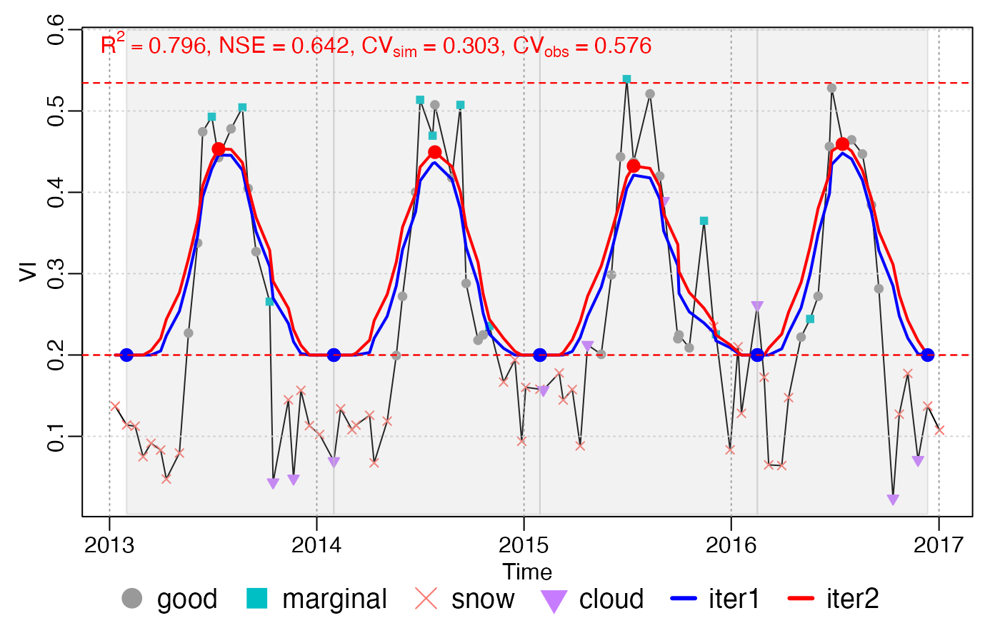

Moving growing season division
season_mov(INPUT, options = list(), ..., years.run = NULL)
Arguments
| INPUT | A list object with the elements of |
|---|---|
| options | see details |
| ... | others parameter to |
| years.run | Numeric vector. Which years to run? If not specified, it is all years. |
options
len_min,len_max: minimum and maximum length (in the unit of days) of growing season.lambda_vcurve: Boolean. If the Whittaker's parameter lambda not provided, whether to optimize lambda by V-curve theory? This parameter only works whenlambdanot provided.maxExtendMonth: Previous and subsequentmaxExtendMonthdata were added for every year curve fitting.
References
Kong, D., Zhang, Y., Wang, D., Chen, J., & Gu, X. (2020). Photoperiod Explains the Asynchronization Between Vegetation Carbon Phenology and Vegetation Greenness Phenology. Journal of Geophysical Research: Biogeosciences, 125(8), e2020JG005636. https://doi.org/10.1029/2020JG005636
Kong, D., Zhang, Y., Gu, X., & Wang, D. (2019). A robust method for reconstructing global MODIS EVI time series on the Google Earth Engine. ISPRS Journal of Photogrammetry and Remote Sensing, 155, 13-24.
Examples
data("CA_NS6") d <- CA_NS6 nptperyear <- 23 INPUT <- check_input(d$t, d$y, d$w, QC_flag = d$QC_flag, nptperyear = nptperyear, south = FALSE, maxgap = nptperyear / 4, alpha = 0.02, wmin = 0.2 ) # plot_input(INPUT) wFUN <- "wTSM" # all year as a whole options = list(rFUN = "smooth_wWHIT", wFUN = wFUN, lambda = 10) brks <- season(INPUT, lambda = 10) plot_season(INPUT, brks, d)brks2 = season_input(INPUT, options) #> iloop = 1: lambda = 10.0, ntrough_PerYear = 0.00, npeak_PerYear = 0.00 #> iloop = 2: lambda = 5.0, ntrough_PerYear = 0.00, npeak_PerYear = 0.00 #> iloop = 3: lambda = 2.5, ntrough_PerYear = 0.00, npeak_PerYear = 0.00 all.equal(brks2, brks) #> [1] TRUE c(d_fit, info_peak) %<-% roughFit(INPUT) #> iloop = 1: lambda = 10.0, ntrough_PerYear = 0.00, npeak_PerYear = 0.00 #> iloop = 2: lambda = 5.0, ntrough_PerYear = 0.00, npeak_PerYear = 0.00 #> iloop = 3: lambda = 2.5, ntrough_PerYear = 0.00, npeak_PerYear = 0.00 d_season = find_season.peaks(d_fit, info_peak) c(t, ypred) %<-% d_fit[, .(t, ziter2)] d_season = find_season.default(ypred, t) all.equal(brks$dt, d_season) #> [1] TRUE # opt <- .options$season # brks$fit - d_fit # function passed test # curve fitting by year brks_mov <- season_mov(INPUT, options = list( rFUN = "smooth_wWHIT", wFUN = wFUN, lambda = 10, r_min = 0.05, ypeak_min = 0.05, verbose = TRUE ) ) #> [season_mov] running 1 ... #> iloop = 1: lambda = 10.0, ntrough_PerYear = 0.00, npeak_PerYear = 0.00 #> iloop = 2: lambda = 5.0, ntrough_PerYear = 0.00, npeak_PerYear = 0.00 #> iloop = 3: lambda = 2.5, ntrough_PerYear = 0.00, npeak_PerYear = 0.00 #> [season_mov] running 2 ... #> iloop = 1: lambda = 10.0, ntrough_PerYear = 0.00, npeak_PerYear = 0.00 #> iloop = 2: lambda = 5.0, ntrough_PerYear = 0.00, npeak_PerYear = 0.00 #> iloop = 3: lambda = 2.5, ntrough_PerYear = 0.00, npeak_PerYear = 0.00 #> [season_mov] running 3 ... #> iloop = 1: lambda = 10.0, ntrough_PerYear = 0.00, npeak_PerYear = 0.00 #> iloop = 2: lambda = 5.0, ntrough_PerYear = 0.00, npeak_PerYear = 0.00 #> iloop = 3: lambda = 2.5, ntrough_PerYear = 0.00, npeak_PerYear = 0.00 #> [season_mov] running 4 ... #> iloop = 1: lambda = 10.0, ntrough_PerYear = 0.00, npeak_PerYear = 0.00 #> iloop = 2: lambda = 5.0, ntrough_PerYear = 0.00, npeak_PerYear = 0.00 #> iloop = 3: lambda = 2.5, ntrough_PerYear = 0.00, npeak_PerYear = 0.00 #> [season_mov] running 5 ... #> iloop = 1: lambda = 10.0, ntrough_PerYear = 0.00, npeak_PerYear = 0.00 #> iloop = 2: lambda = 5.0, ntrough_PerYear = 0.00, npeak_PerYear = 0.00 #> iloop = 3: lambda = 2.5, ntrough_PerYear = 0.00, npeak_PerYear = 0.00 #> [season_mov] running 6 ... #> iloop = 1: lambda = 10.0, ntrough_PerYear = 0.00, npeak_PerYear = 0.00 #> iloop = 2: lambda = 5.0, ntrough_PerYear = 0.00, npeak_PerYear = 0.00 #> iloop = 3: lambda = 2.5, ntrough_PerYear = 0.00, npeak_PerYear = 0.00 #> [season_mov] running 7 ... #> iloop = 1: lambda = 10.0, ntrough_PerYear = 0.00, npeak_PerYear = 0.00 #> iloop = 2: lambda = 5.0, ntrough_PerYear = 0.00, npeak_PerYear = 0.00 #> iloop = 3: lambda = 2.5, ntrough_PerYear = 0.00, npeak_PerYear = 0.00 plot_season(INPUT, brks_mov) 